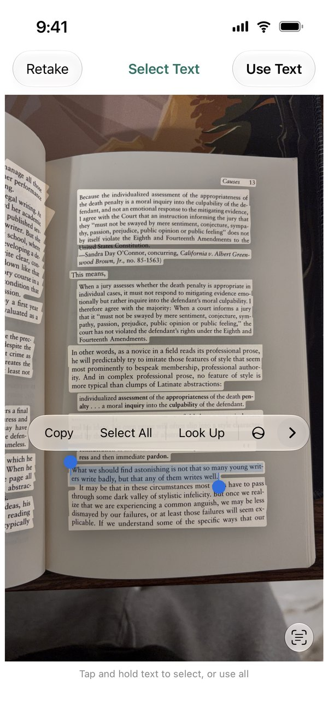
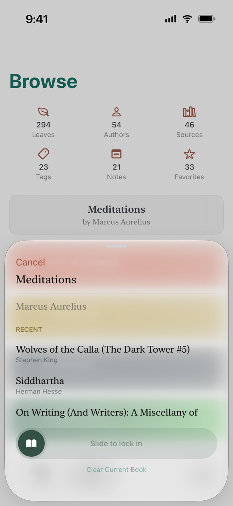
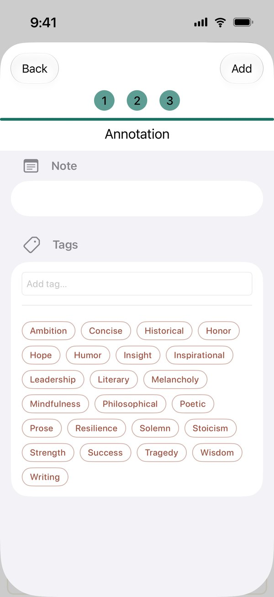
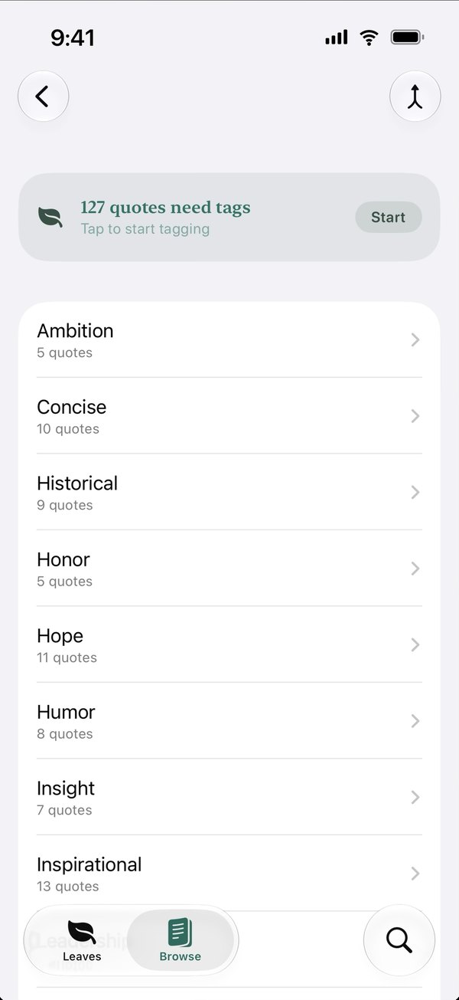
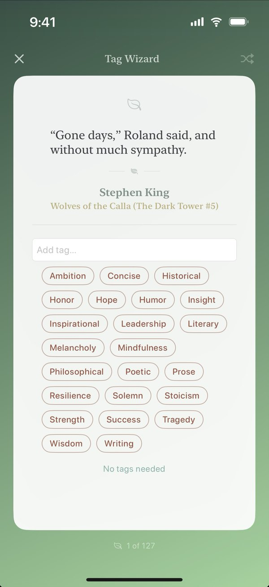
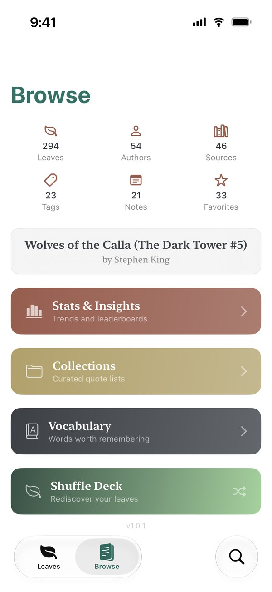
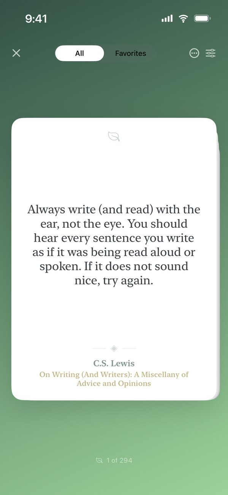
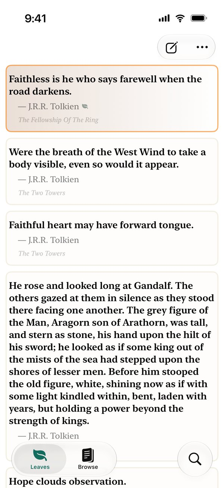

InkLeaf
An iPhone app for keeping the passages and quotes you want to remember.
Join the TestFlight beta
Add quotes
Take a photo of a printed page, select the text you want, and InkLeaf saves it as an entry.
Lock in a book and its author and title are used for every entry from it. Add a note to an entry when you want to remember the context.



Tag them
InkLeaf shows how many entries still need tags. Start the Tag Wizard and go through them one at a time, picking from your existing tags or adding a new one.


Find them again
Search by author, source, tag, entries with notes, or favorites. Group entries into collections.
Shuffle to flip through your entries as cards. Everything syncs through iCloud.


